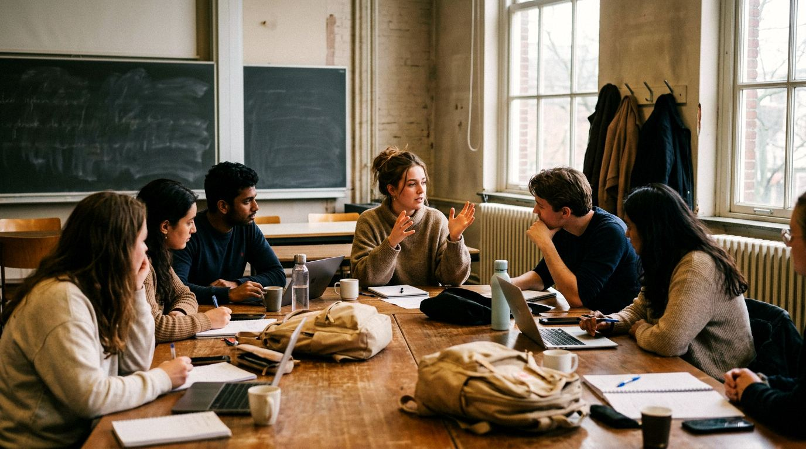

Home › Opleidingen › Psychologie & maatschappij

Opleidingen in Psychologie & maatschappij
Begrijpen hoe mensen en samenlevingen werken: psychologie, sociologie en politiek. Hier staan alle 37 opleidingen in deze groep, op mbo, hbo en universiteit.
Wat kun je ermee?
- Psycholoog (na een master en vervolgopleiding)
- Onderzoeker of beleidsmedewerker
- Coach (begeleider), trainer of HR-adviseur (personeelsadviseur)
- Werken bij overheid, zorg of bedrijven
Op hbo (11)
- Business Psychology
- European Studies
- Europese Studies
- Muziektherapie
- Organisatiepsychologie
- Politieleider
- Popular Culture
- Psychomotorische Therapie en Bewegingsagogie
- Speltherapie
- Toegepaste Psychologie
- Vaktherapie
Op wo (universiteit) (27)
- Algemene Cultuurwetenschappen
- American Studies
- Computational Social Science
- Criminologie
- Culturele Antropologie en Ontwikkelingssociologie
- Cultuurwetenschappen
- Digital Society
- Europese Studies
- Global Responsibility and Leadership
- Global Studies
- Human Geography and Planning
- Humane Neurowetenschappen
- Interdisciplinaire sociale wetenschap
- International Studies
- Internationale Betrekkingen en Internationale Organisatie
- Internationale Ontwikkelingsstudies
- Liberal Arts and Sciences
- Liberal Arts and Sciences (joint degree)
- Liberal Arts and Sciences: Global Challenges
- Media en Cultuur
- Philosophy, Politics and Economics
- Politicologie
- Politics, Psychology, Law and Economics
- Psychologie
- Sociale Geografie en Planologie
- Sociologie
- Technology and Liberal Arts & Sciences
Weet je nog niet welke kant je op wilt? De Padvinder laat in 5 minuten zien welke richtingen bij je passen.
Start de Padvinder